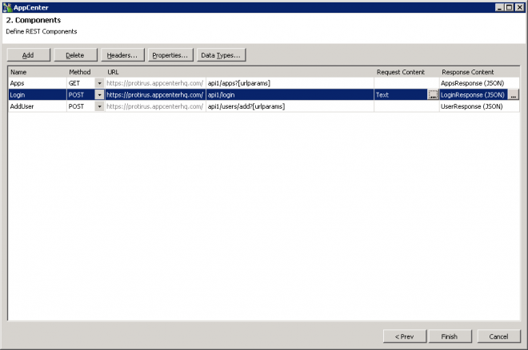
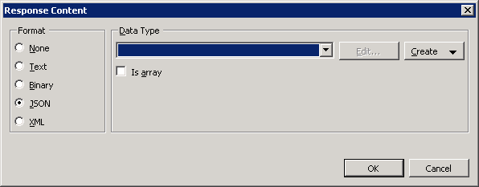
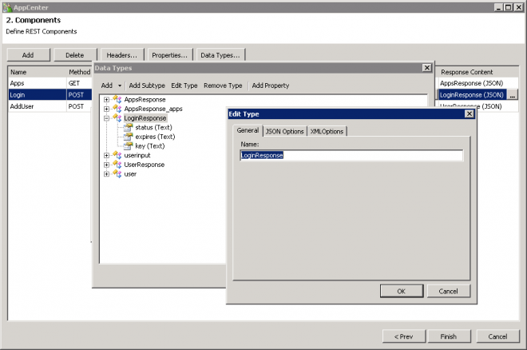
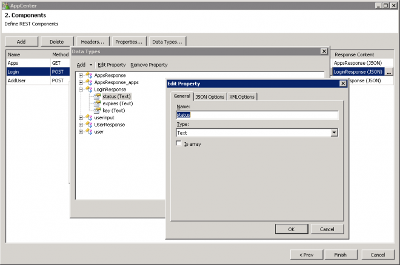
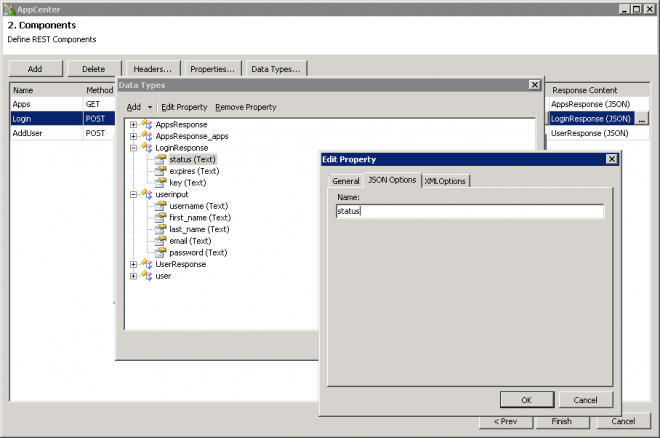

In this Article I will explain how to use POST requests in the REST Generator within Workflow and Mobility Suite.
This will assume knowledge of Workflow and REST APIs and it would be helpful to read through the previous articles.
Previous Articles
- Workflow - REST Generator
- Using the REST Generator in Workflow 7.6
- Using the REST Generator (GET) in Workflow 7.6 with Mobility Suite
- Using the REST Generator (Headers) in Workflow 7.6 with Mobility Suite
- Using the REST Generator (POST) in Workflow 7.6 with Mobility Suite
- Using the REST Generator (Response Content) in Workflow 7.6
- Using the REST Generator (PATHs) in Workflow 7.6
- Workflow - Read Write JSON
- Workflow - REST - Response Header
This is an example of a POST Request using the Login API of App Center
From the Documentation:
Symantec Mobility Manager 5.4 API Reference Guide
User Authentication
The API also supports converting username/password credentials into a limited-lifetime API key (token) via a login method.
NOTE: API keys created using the login method will not work with the on_behalf_of parameter.
Login
URL: /api1/login
Methods:
• GET
o None
• POST
o Description: Login to receive an API key for subsequent requests.
o Encoding: application/x-www-form-urlencoded
o POST parameters:
username: The Mobility Suite username
password: The user’s password
• Returns: On success:
• status: the status “okay”
• api-key: the temporary API Key (not URL encoded!)
• expiry: The expiration time as a unit timestamp.
HTTPResponse: 200
{
"status": "okay",
"api-key": "<the api key>",
"expiry": 1412046458
}
• Return-type: application/json
• Errors
HTTPResponse: 401
{
"status": "error",
"message": "User name or password not valid",
"code": 105
}
HTTPResponse: 403
{
"status": "error",
"message": "User does not have permission",
"code": 0
}
Let's build the REST Generator first:
Add
Change the Method to "POST"
Add your further URL "api1/login"
Give it a name - "Login"
Set the 'Request Content' to "Text"

Now for the Respone Content choose the Format (JSON)

You may need to create the Response Content "Manually" instead of "Create From Request", it doesn't handle POSTs too well.
Documentation from the API provider comes in handy, just create a Data Type how you would with the INT components and DBDT or DTs.
Give it a name - LoginResponse

Then 3 Properties
- status
- api-key
- expiry


Back in Workflow
Add a  Code (Script) Component
Code (Script) Component

Map the values from your process

Set the output to Text and give it an output of RequestContent

Choose your Language, I've picked VB.NET this time but you could use C#.

Dim escapedUsername As String
Dim escapedPassword As String
escapedUsername = Uri.EscapeDataString(username)
escapedPassword = Uri.EscapeDataString(password)
'return "username=" & username & "&password=" & password
return "username=" & escapedUsername & "&password=" & escapedPassword
Run a test to see the output.

Now add the Login component that you created from the REST Generator.
Pass in your RequestContent

Set the StatusCode etc.
Now you can login and get an API key to work with throughout the rest of your Workflow.
Previous Articles
- Using the REST Generator in Workflow 7.6
- Using the REST Generator (GET) in Workflow 7.6 with Mobility Suite
- Using the REST Generator (Headers) in Workflow 7.6 with Mobility Suite